전산응용토목제도기능사 (2010-10-03 기출문제)
1과목: 토목제도(CAD)
1. 콘크리트용으로 사용하는 부순 굵은 골재의 특징으로 옳지 않은 것은?
- 시멘트와 부착이 좋다.
- 단위 수량이 많이 요구된다.
- 휨강도가 커서 포장콘크리트에 사용하면 좋다.
- 수밀성, 내구성이 현저히 좋아진다.
(정답률: 40%)

2. 현장치기 콘크리트 공사의 압축부재에서 사용되는 나선철근의 지름은 최소 얼마 이상이어야 하는가?
- 5㎜
- 10㎜
- 15㎜
- 20㎜
(정답률: 35%)
3. 철근의 구부리기에 관한 설명으로 옳지 않은 것은?
- 모든 철근은 가열해서 구부리는 것을 원칙으로 한다.
- D38 이상의 철근은 구부림 내면반지름을 철근지름의 5배 이상으로 하여야 한다.
- 콘크리트 속에 일부가 묻혀 있는 철근은 현장에서 구부리지 않는 것이 원칙이다.
- 큰 응력을 받는 곳에서 철근을 구부릴 때는 구부림 내면 반지름을 더욱 크게 하는 것이 좋다.
(정답률: 55%)
4. 콘크리트에 일정하게 하중을 주면 응력의 변화는 없는데도 변형이 시간이 경과함에 따라 커지는 현상은?
- 건조수축
- 크리프
- 틱소트로피
- 릴랙세이션
(정답률: 72%)
5. 압축부재에 사용되는 나선철근의 순간격 범위로 옳은 것은?
- 25㎜ 이상, 55㎜ 이하
- 25㎜ 이상, 75㎜ 이하
- 55㎜ 이상, 75㎜ 이하
- 55㎜ 이상, 90㎜ 이하
(정답률: 84%)
6. 워싱턴형 공기량 측정기를 사용하여 공기실의 일정한 압력을 콘크리트에 주었을 때 공기량으로 인하여 공기실의 압력이 떨어지는 것으로부터 공기량을 구하는 방법은 어는 것인가?
- 무게법
- 부피법
- 공기실 압력법
- 진공법
(정답률: 84%)
7. 하중을 분포시키거나 균열을 제어할 목적으로 주철근과 직각에 가까운 방향으로 배치한 보조철근은?
- 정철근
- 부철근
- 스터럽
- 배력철근
(정답률: 66%)
8. 철근의 피복두께에 관한 설명으로 옳지 않은 것은?
- 철근 중심으로부터 콘크리트 표면까지의 최장거리이다.
- 철근의 부식을 방지할 수 있도록 충분한 두께가 필요하다.
- 내하적인 구조로 만들기 위하여 피복두께를 설치한다.
- 철근과 콘크리트의 부착력을 확보한다.
(정답률: 63%)
9. 인장 이형철근의 정착 길이는 항상 얼마 이상이어야 하는가?
- 150㎜ 이상
- 200㎜ 이상
- 300㎜ 이상
- 400㎜ 이상
(정답률: 47%)
10. 프리스트레스트 콘크리트의 특징으로 옳지 않은 것은?
- 균열이 생기지 않는다.
- 처짐이 작다.
- 강성이 작아 변형이 크다.
- 강성이 커서 변형이 작다.
(정답률: 34%)
11. 철근콘크리트 휨부재의 강도설계법에 대한 기본 가정으로 옳지 않은 것은?
- 콘크리트와 철근의 변형률은 중립축으로부터 거리에 비례한다고 가정한다.
- 항복강도 fy 이하에서 철근의 응력은 그 변형률의 Es 배로 본다.
- 콘크리트의 압축강도를 무시한다.
- 철근과 콘크리트의 부착이 완벽한 것으로 가정한다.
(정답률: 68%)
12. 철근의 용접이음을 할 때 철근의 설계기준항복강도(fy)의 몇 % 이상의 인장력을 발휘할 수 있는 완전용접이어야 하는가?
- 90%
- 100%
- 125%
- 150%
(정답률: 78%)
13. 직사각형 단면의 철근콘크리트 보에서 콘크리트의 설계기준압축강도(ƒck)가 21MPa, 철근의 설계기준항복강도(ƒy)가 300MPa 일 때 균형철근비(Pb)는?(오류 신고가 접수된 문제입니다. 반드시 정답과 해설을 확인하시기 바랍니다.)
- 0.0337
- 0.0396
- 0.0466
- 0.⑤49
(정답률: 30%)
14. 콘크리트의 시방배합에서 잔골재 및 굵은 골재는 어느 상태를 기준으로 하는가?
- 노건조상태
- 공지중건조상태
- 표면건조포화상태
- 습윤상태
(정답률: 80%)
15. 휨모멘트를 받는 부재에서 fck = 30MPa, 등가직사각형 응력블록의 깊이 a = 209㎜ 일 때, 압축연단에서 중립축까지의 거리 c는?(오류 신고가 접수된 문제입니다. 반드시 정답과 해설을 확인하시기 바랍니다.)
- 220㎜
- 230㎜
- 240㎜
- 250㎜
(정답률: 22%)
16. 용접 이음에 대한 장점이 아닌 것은?
- 리벳 접합 방식에 비하여 강재를 절약할 수 있다.
- 인장측에 리벳 구멍에 의한 단면 손실이 없다.
- 시공 중에 소음이 없다.
- 접합부의 강성이 작다.
(정답률: 42%)
17. 옹벽의 종류와 설명이 바르게 연결된 것은?
- 뒷부벽식 옹벽 - 통상 무근 콘크리트로 만든다.
- 캔틸레버 옹벽 - 철근 콘크리트로 만들어지며 역 T형 옹벽이라 한다.
- 중력식 옹벽 - 통상 높이가 6m 이상의 옹벽에 주로 쓰인다.
- 앞부벽식 옹벽 - 옹벽 높이가 7.5m를 넘는 경우는 비경제적이다.
(정답률: 66%)
18. 복철근 직사각형보로 설계하는 경우를 잘못 나타낸 것은?
- 구조상 높이에 제한을 받지 않는 경우
- 처짐을 극소화 시켜야 하는 경우
- 양(＋) 및 음(-)의 모멘트를 반복해서 받는 교각 및 교대의 경우
- 주동 토압과 수동 토압이 반복적으로 작용하는 옹벽의 경우
(정답률: 36%)
19. 토목구조물의 특징을 잘못 나타낸 것은?
- 다량생산이다
- 일반적으로 규모가 크다.
- 구조물의 수명이 길다.
- 대부분이 공공의 목적으로 건설된다.
(정답률: 84%)
20. 도로교 설계 기준으로 양 끝이 고정되어 있는 기둥에서 기둥의 길이가 L인 경우 유효 길이는?
- 0.5L
- 0.7L
- 1.0L
- 2.0L
(정답률: 27%)
2과목: 철근콘크리트
21. 두께에 비하여 폭이 넓은 판 모양의 구조물을 무엇이라 하는가?
- 옹벽
- 기둥
- 슬래브
- 확대기초
(정답률: 74%)
22. 교량의 설계하중에 있어서 주하중에 대한 설명으로 옳은 것은?
- 항상 장기적으로 작용하는 하중
- 때에 따라 작용하는 하중
- 설계에 있어서 고려하지 않아도 되는 하중
- 온도의 변화에 따른 하중
(정답률: 71%)
23. 프리스트레스(PS) 강재에 필요한 성질이 아닌 것은?
- 인장강도가 커야 한다.
- 릴랙세이션(relaxation)이 커야 한다.
- 적당한 연성과 인성이 있어야 한다.
- 응력 부식에 대한 저항성이 커야 한다.
(정답률: 73%)
24. 그림은 T형 보를 나타내고 있다. 유효폭을 나타내고 있는 것은?
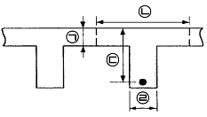
- ㉠
- ㉡
- ㉢
- ㉣
(정답률: 45%)
25. 교량을 중심으로 세계 토목 구조물의 역사를 보면 재료 및 신기술의 발전과 사회 환경의 변화로 장대교량이 출현한 시기는?
- 기원 전 1~2세기
- 9~10세기
- 11~18세기
- 19~20세기 초
(정답률: 68%)
26. 도로교 설계 기준에서 표시되는 DB는 어떤 하중인가?
- 표준 고정 하중
- 표준 차선 하중
- 표준 트럭 하중
- 표준 이동 하중
(정답률: 52%)
27. 자중을 포함하여 P=1000KN인 수직 하중을 받는 독립 확대 기초에서 허용 지지력 Pɑ=250KN/m2 일 때, 경제적인 기초의 한 변의 길이는? (단, 기초는 정사각형임)
- 2m
- 3m
- 4m
- 5m
(정답률: 24%)
28. 현대식 교량 형식 중 사장교가 아닌 것은?
- 영종 대교
- 서해 대교
- 인천 대교
- 올림픽 대교
(정답률: 34%)
29. 자동차의 원심 하중 설계 시 원심 하중은 노면의 얼마의 높이에서 작용하는 것으로 계산하는가?
- 500㎜
- 800㎜
- 1500㎜
- 1800㎜
(정답률: 29%)
30. 계곡이나 저지대 등의 물이 없는 곳에 가설된 교량 또는 철도나 도로를 넘어가기 위하여 가설된 도보용 교량은?
- 육교
- 고가교
- 철도교
- 수로교
(정답률: 66%)
31. 컴퓨터에서 중앙처리 장치의 주역할은?
- 데이터를 입력하는 기능
- 데이터를 출력하는 기능
- 데이터를 기억 보관하는 기능
- 데이터를 제어하고 연산하는 가능
(정답률: 66%)
32. KS 제도 통칙에서 토목, 건축의 분류기호는?
- KS F
- KS A
- KS B
- KS C
(정답률: 85%)
33. 골재의 단면 표시 중 잡석을 나타내는 것은?
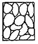
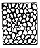
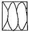
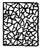
(정답률: 60%)
34. 토목 제도에서 치수를 나타내기 위하여 치수선과 더불어 사용하는 선으로 실선으로 나타내는 것은?
- 외곽선
- 치수 보조선
- 중심선
- 피치선
(정답률: 73%)
35. 공업 각 분야에서 사용되고 있는 다음과 같은 기본부분을 규정하고 있는 한국산업표준의 영역은?
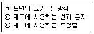
- KS A
- KS B
- KS C
- KS D
(정답률: 62%)
36. 제도 도면에 사용되는 문자의 크기를 나타내는 방법은?
- 간격
- 높이
- 폭
- 길이
(정답률: 84%)
37. 재료 단면의 경계 표시 중 암반면을 나타내는 것은?
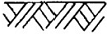
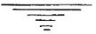
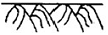
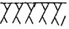
(정답률: 85%)
38. 재료 단면 표시 중 강철을 표시하는 기호는?
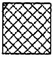
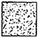
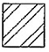
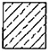
(정답률: 70%)
39. 치수 기입에 대한 설명으로 옳지 않은 것은?
- 치수선에는 분명한 단말 기호(화살표)를 표시한다.
- 한 장의 도면에는 같은 종류의 화살표 단말 기호를 사용한다.
- 치수 수치는 도면의 위쪽이나 오른쪽으로부터 읽을 수 있도록 나타낸다.
- 일반적으로 치수 보조선과 치수선이 다른 선과 교차하지 않도록 한다.
(정답률: 72%)
40. 컴퓨터를 사용하여 제도 작업을 할 때의 특징과 가장 거리가 먼 것은?
- 신속성
- 정확성
- 응용성
- 인간성
(정답률: 90%)
3과목: 토목일반구조
41. 국제 표준화 기구를 나타내는 표준 규격 기호는?
- ANS
- JIS
- ISO
- DIN
(정답률: 90%)
42. 다음 그림과 같은 성토면의 경사 표시가 바르게 된 것은?
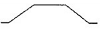
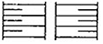
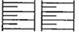
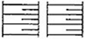
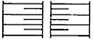
(정답률: 76%)
43. 도로설계제도에서 굴곡부 노선의 제도에 사용되는 기호 중 교점을 나타내는 것은?
- IP
- I
- TL
- BC
(정답률: 50%)
44. 토목제도에서 모든 대칭인 물체나 원형인 물체의 중심선으로 사용되는 선은?
- 파선
- 1점 쇄선
- 2점 쇄선
- 나선형 실선
(정답률: 81%)
45. 배근도의 치수가 “7@250=1750”으로 표시되었을 때 이에 따른 설명으로 옳은 것은?
- 철근의 길이가 1750㎜이다.
- 배열된 철근의 개수가 250개이다.
- 철근과 다음 철근의 간격이 1750㎜이다.
- 철근을 250㎜ 간격으로 7등분하여 배열하였다.
(정답률: 76%)
46. 정투상법에서 제3각법의 순서로 옳은 것은?
- 눈 → 물체 → 투상면
- 눈 → 투상면 → 물체
- 물체 → 눈 → 투상면
- 투상면 → 물체 → 눈
(정답률: 70%)
47. 콘크리트 구조물 제도에서 구조물의 모양치수를 모두 표현하고, 거푸집을 제작할 수 있는 도면은 무엇인가?
- 일반도
- 구조일반도
- 구조도
- 상세도
(정답률: 50%)
48. 철근의 갈고리 측면도의 종류에 해당되지 않는 것은?
- 원형갈고리
- 직각갈고리
- 예각갈고리
- 경사갈고리
(정답률: 64%)
49. 그림에서와 같이 주사위를 바라보았을 때 평면도를 바르게 표현한 것은? (단, 물체의 모서리 부분의 표현은 무시한다.)
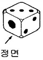
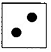
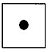
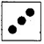
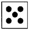
(정답률: 73%)
50. 정투상도에서 표시되지 않는 도면은?
- 측면도
- 단면도
- 평면도
- 정면도
(정답률: 62%)
51. 사투상도에서 물체를 입체적으로 나타내기 위해 수평선에 대하여 경사각으로 주로 사용되지 않는 각은?
- 30°
- 45°
- 60°
- 75°
(정답률: 54%)
52. 도면과 축척에 대한 설명으로 옳은 것은?
- 도면의 크기는 종이 재단 치수의 A1~A8에 따른다.
- 도면은 짧은 변 방향을 좌우 방향으로 놓는 것을 원칙으로 한다.
- 윤곽선은 최소 0.5㎜ 이상 두께의 실선으로 그리는 것으로 한다.
- 축척은 도면마다 기입하지 않는다.
(정답률: 70%)
53. 제도에 사용되는 A1 도면의 크기로 옳은 것은?
- 420㎜ × 594㎜
- 594㎜ × 841㎜
- 841㎜ × 1189㎜
- 1189㎜ × 1680㎜
(정답률: 54%)
54. 원 또는 호의 반지름을 나타낼 치수에서 치수 숫자 앞에 붙이는 기호(또는 문자)는?
- R
- ø
- S
- D
(정답률: 75%)
55. 도면 작성에서 가는 선 : 굵은 선 : 아주 굵은 선의 굵기 비율로 바른 것은?
- 1 : 2 : 3
- 1 : 2 : 4
- 1 : 3 : 5
- 1 : 3 : 6
(정답률: 69%)
56. 강구조물의 도면의 배치 방법으로 옳지 않은 것은?
- 강구조물은 너무 길고 넓어 많은 공간을 차지하므로 몇 가지의 단면으로 절단하여 표현한다.
- 강구조물의 도면은 제작이나 가설을 고려하여 부분적으로 제작 단위마다 상세도를 작성한다.
- 평면도, 측면도, 단면도 등을 소재나 부재가 잘 나타나도록 하되 각각 독립하여 그리지 않도록 한다.
- 도면을 잘 보이도록 하기 위해서 절단선과 지시선의 방향을 표시하는 것이 좋다.
(정답률: 46%)
57. 치수 기입에 대한 설명으로 옳지 않은 것은?
- 치수의 단위는 m를 사용하나 단위를 기입하지 않는다.
- 치수 수치는 치수선에 평행하게 기입하고, 치수선의 중앙의 위쪽에 기입한다.
- 경사를 표시할 때는 백분율(%) 또는 천분율(‰)로 표시 할 수 있다.
- 치수는 치수선이 교차하는 곳에는 가급적 기입하지 않는다.
(정답률: 76%)
58. 컴퓨터 운영체제 프로그램이 아닌 것은?
- 도스(DOS)
- 윈도우(Windows)
- 리눅스(Linux)
- 캐드(CAD)
(정답률: 73%)
59. 도로 설계에서 종단면도를 작성할 때에 기입할 사항에 대한 설명으로 옳지 않은 것은?
- 지반고는 야장의 각 중심말뚝에 대한 표고를 기재한다.
- 기준선은 반드시 지반고와 계획고 이상이 되도록 한다.
- 추가 거리는 각 측점의 기점(NO.0)에서부터 합산한 거리를 기입한다.
- 측점은 20m마다 박은 중심 말뚝의 위치를 왼쪽에서 오른쪽으로 NO.0, NO.1, ....의 순으로 기입한다.
(정답률: 50%)
60. 어떤 재료의 치수가 2-H 300×200×9×12×1000로 표시되었을 때 설명으로 옳은 것은? (단, 단위는 ㎜이다.)
- H형강 2본, 높이 300, 폭 200, 복부판두께 9, 플렌지두께 12, 길이 1000
- H형강 2본, 폭 300, 높이 200, 복부판두께 9, 플렌지두께 12, 길이 1000
- H형강 2본, 높이 300, 폭 200, 플렌지두께 9, 복부판두께 12, 길이 1000
- H형강 2본, 폭 300, 높이 200, 플렌지두께 9, 복부판두께 12, 길이 1000
(정답률: 43%)